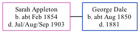

Sarah Ann Dale (née Appleton) cFeb 1854 - 1903
[ Home ] | [ Calendar ] | [ Surnames Index ] | [ Family History ]Sarah Appleton, the wife of George Dale (the great-great-uncle of Nigel Horne), was born in Nonington, Kent, England c. Feb 18541,2,3,4,5,6 and baptized there on Oct 29, 1854. She married George at St Mary, Chartham, Kent, England on Oct 5, 18797.
Throughout her life, she lived in Bridge, Kent in 18811; and at her birthplace in 18912.
She died in Jul/aug/sep 1903 in Thanet, Kent5,6 and was buried on Sep 5, 19036.
Citations
- 1881 England Census Online publication - Provo, UT, USA: The Generations Network, Inc., 2004. 1881 British Isles Census Index provided by The Church of Jesus Christ of Latter-day Saints © Copyright 1999 Intellectual Reserve, Inc. All rights reserved. All use is subject to the
- 1891 England Census Online publication - Provo, UT, USA: The Generations Network, Inc., 2005.Original data - Census Returns of England and Wales, 1891. Kew, Surrey, England: The National Archives of the UK (TNA): Public Record Office (PRO), 1891. Data imaged from The National
- England & Wales births 1837-2006 - Findmypast
- England & Wales, FreeBMD Birth Index, 1837-1915 Online publication - Provo, UT, USA: The Generations Network, Inc., 2006.Original data - General Register Office. England and Wales Civil Registration Indexes. London, England: General Register Office. © Crown copyright. Published by permission of the Cont
- England & Wales, FreeBMD Death Index: 1837-1915 Online publication - Provo, UT, USA: The Generations Network, Inc., 2006.Original data - General Register Office. England and Wales Civil Registration Indexes. London, England: General Register Office. © Crown copyright. Published by permission of the Cont
- England, Select Deaths and Burials, 1538-1991 Ancestry.com Operations, Inc.
- England, Select Marriages, 1538–1973 Ancestry.com Operations, Inc.
Media
England & Wales births 1837-2006 - BMD/B/1854/1/AG/000069/040
Family Tree
Generated by Ged2Site. Last updated on Jul 20, 2025